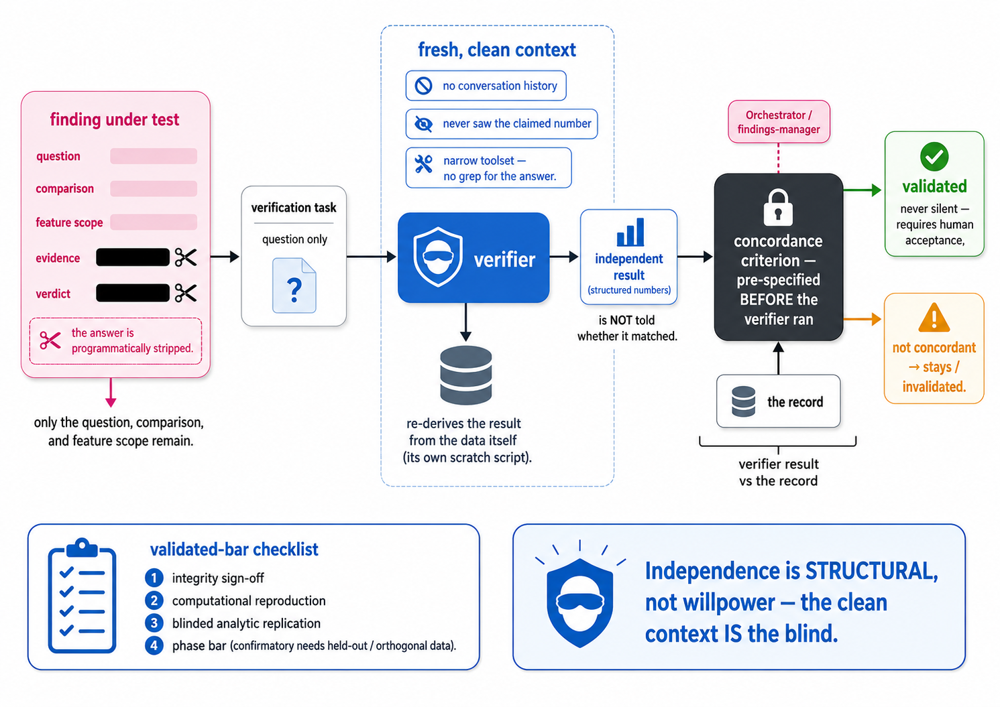

Independent validation
The verification agent
A finding's answer is programmatically stripped; a blind verifier re-derives the result from the data in a fresh context, then checks it against a pre-specified concordance criterion.
